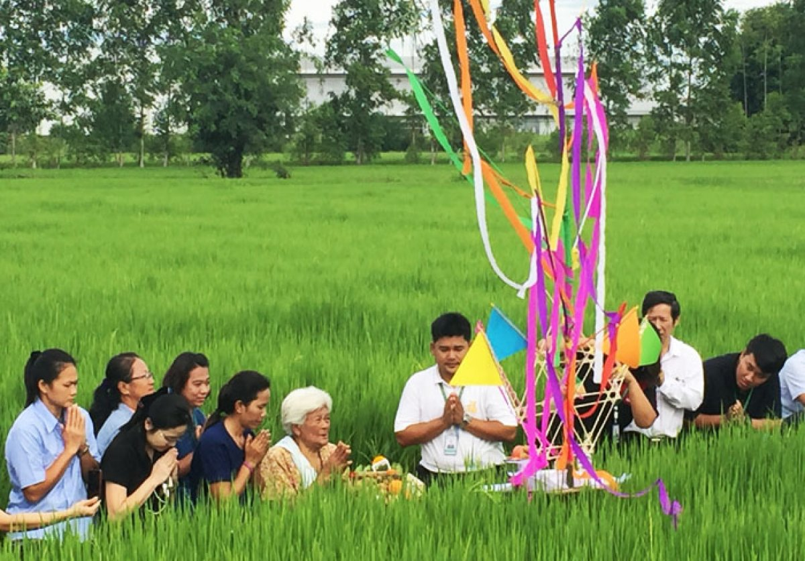

ประเพณีภาคกลาง
-

ประเพณีสู่ขวัญข้าว
เพื่อเรียกขวัญพระแม่โพสพที่ตกหล่นตามท้องนาขึ้นสู่ยุ้งฉาง บำรุงขวัญและความเชื่อของชาวนา รวมถึงการแสดงความกตัญญูต่อพระแม่โพสพ บูชาพระแม่โพสพ ป้องกันศัตรูพืชและสัตว์ทำลาย เพื่อให้ได้ผลผลิตมากในปีต่อไป
-

ประเพณีวิ่งควาย
ประเพณีวิ่งควาย เป็นประเพณีเกี่ยวกับอาชีพเกษตรกรรม ซึ่งตกทอดมาจากบรรพบุรุษจนถึงปัจจุบัน จุดมุ่งหมายเพื่อให ้ชาวบ้านได้เตรียมของไปถวายวัด ปัจจัยไทยธรรมได้พักผ่อนและได้สังสรรค์กันระหว่างชาวบ้านซึ่งเหนื่อยจากงานและให้ควายได้พักเนื่องจากต้องตรากตรำในการทำนา ปัจจุบันประเพณีวิ่งควายเป็นประเพณีของจังหวัดชลบุรี โด่งดังเป็นที่รู้จักของชาวไทยและต่างประเทศ